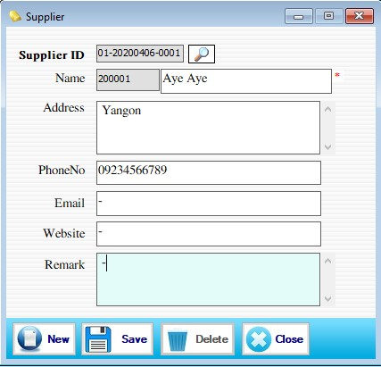

Supplier Setup

- Master Setup အောက်ရှိ Supplier ကိုနှိပ်ပါ။
Supplier ID ကို Software မှ Auto တပ်ပေးပါသည်။ Supplier ID-01 သည် ဆိုင် Location No. ဖြစ်ပါသည်။ 2020 မှာ Current Year ၊ 04 မှာ Current Month ဖြစ်ပြီး 06 မှာ Current Date ဖြစ်ပါသည်။ 0001 သည် Serial အတိုင် Software မှ Auto တပ်ပေးပါသည်။
- Name ဘေးရှိ 200001 သည် Supplier Code ဖြစ်ပြီး Software မှ Auto တပ်ပေးပါသည်။
- Name, Address, Phone No. ,Email, Website, Remark တို့ကိုဖြည့်စွက်ပြီး Save Button ကိုနှိပ်၍ သိမ်းဆည်းနိုင်ပါသည်။
- သိမ်းဆည်းထားပြီးသေ Data များကိုပြန်လည်ကြည့်ရှု့လိုခြင်း၊ ပြင်ဆင်ခြင်းများပြုလုပ်လိုပါက Supplier ID ဘေးရှိ မှန်ဘီလူးကိုနှိပ်၍ ကြည့်ရှုပြင်ဆင်ပြီး Update Button ကိုနှိပ်၍ သိမ်းဆည်းနိုင်ပါသည်။
- သိမ်းဆည်းထားပြီးသော Data များကို ဖျက်လိုလျှင် Supplier ID ဘေးရှိ မှန်ဘီလူးကိုနှိပ်၍ Delete ပြုလုပ်လိုသော Supplier ကိုရွေးချယ်ပြီး Delete Button ကိုနှိပ်၍ ဖျက်နိုင်ပါသည်။
- Supplier အသစ်ထည့်လိုပါက New Button ကိုနှိပ်ပြီးအသစ်ထည့်နိုင်ပါသည်။
- Supplier Form အသုံးပြုပြီးပါက Close Button ကိုနှိပ် ၍ ပိတ် နိုင်ပါသည်။